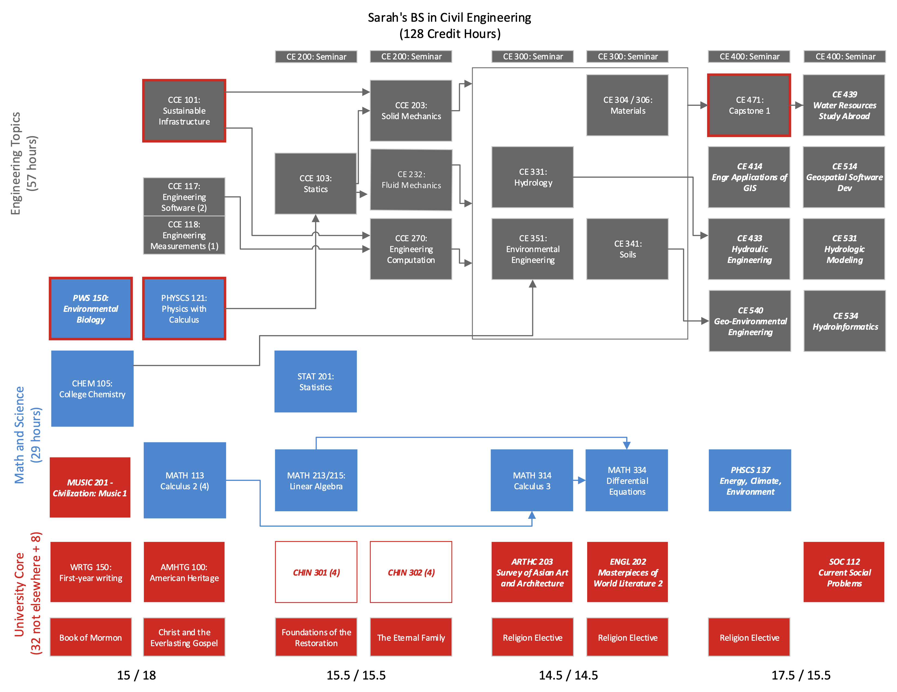
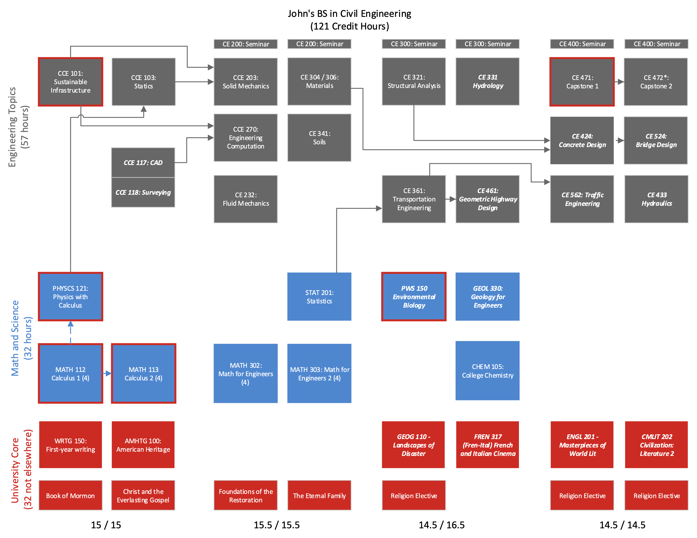
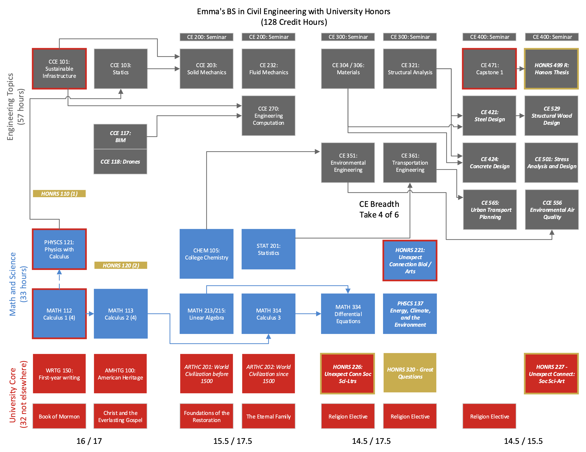
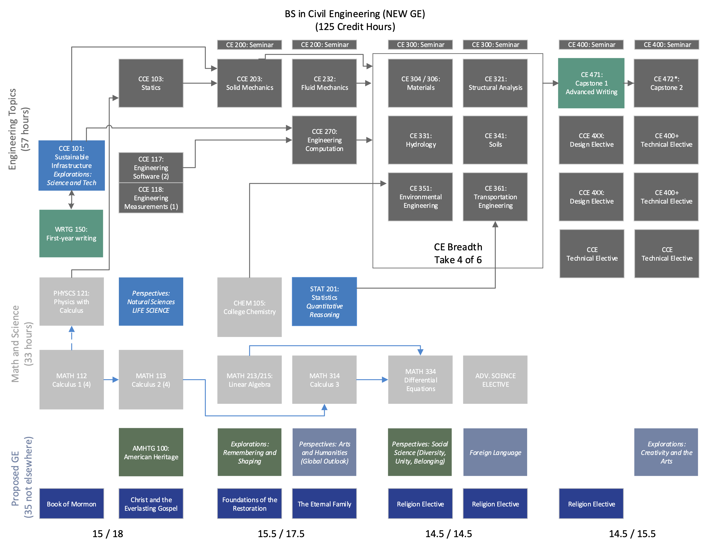

5 Student Stories
This section presents a set of stories that reflect the variety of experiences possible for students in our program. They are at least partially derived from student exit interviews. Additionally, we present how the new GE proposal will impact the curriculum.
5.1 Sarah (Environmental Hydrology)
Sarah came to BYU not knowing what her major would be, but she knew she wanted to help the environment. She passed AP Calculus in high school and played the cello in her high school orchestra. She’s not sure about grad school, but could be persuaded. Her program of study is shown in Figure 5.1.
Freshman Year When arriving at BYU Sarah was mostly focused on GE’s while looking for a major. One day on the BYU website she sees a profile of Jim Nelson’s research, and decides she wants to learn how to do environmental hydrology. She has already taken the PWS Environmental Biology class as well as Chem 105, so she enrolls in CCE 101 for Winter semester. In March she receives a call to serve a Chinese speaking mission in Canada, and is gone for 18 months.
Sophomore Year When Sarah returns from her mission, she wants to continue studying Chinese, so she makes room in her schedule for Chinese 301 and 302 by putting off the Math classes for a semester.
Junior Year Sarah elects to skip structural analysis and transportation engineering so that she can attain a deeper focus on environmental hydrology. She still has breadth classes in soil mechanics and engineering materials, which will prepare her for design electives next year. She decides to take English Civ instead of the Music series she started as a Freshman so it will double-count for her Letters GE requirement, while adding an Arts GE elective in Asian art.
Senior Year While taking the design classes in GIS software and hydraulics, Sarah is recruited for a senior research project and associated study abroad. She builds hydrologic hazards mapping software for communities in Nepal as a culminating design experience.

5.2 John (UDOT Engineer)
John chose to major in Civil Engineering because his uncle is a civil engineer with the state highway department. He is not planning on an MS degree; his goal is to get into practical classes as quickly as possible so that he can get an internship with UDOT leading to their rotational engineering program. His program of study is shown in Figure 5.2.
Freshman Year John learned from his uncle that engineers use CAD and surveying tools, so he signs up for those as his 117/118 pair.
Sophomore Year In order to save a credit hour and get through the math sequence as quickly as possible, John opts for the 2-class Math for Engineers option. He also notices that because he doesn’t plan to take CE 351: Environmental, he can put off CHEM 105 and instead take his fluids and computations class a semester earlier. This gives him a head start on Materials and Soils, preparing him for an internship with a geotechnical engineering firm with UDOT contracts.
Junior Year John has a girlfriend who served her mission in Paris, and they decide to take the French and Italian cinema class together to fill his arts GE elective. For his life science and social science GE electives, John decides that Environmental Biology might fill in some things he missed by not taking CE 351, and the disasters class in the geography department could provide useful background for a highway engineer who is worried about resiliency. And because he is a little bit ahead in the program, John gets started on his design electives, opting to take CE 461 in his junior year. He also decides to take CE 331 Hydrology as a tech elective, even though he already has fulfilled the breadth requirement for the program.
Senior Year Hearing more about all the things a UDOT rotational engineer works on, John fills out his four remaining CE electives with an eclectic mix of traffic engineering, hydraulic engineering, and reinforced bridge design. And after putting off his GE Civ classes, John realizes that he kind of liked his literature teacher back in high school and decides to do a series in English and Comparative Literature, which double-counts as his GE Letters requirement. His team’s capstone project involves a drainage plan for a new pedestrian trail in Springville, and he’s glad he took the extra class in Hydrology the year before.

5.3 Emma (University Honors, M.Arch Preparation)
Emma is a high-achieving student who wants to improve the design and ecological impact of built spaces. She hopes for placement in a top Master of Architecture program, and believes that completing a structural engineering-focused BS in CE would be good preparation. Emma also hopes that completing University Honors will help distinguish her application. Her program is shown in Figure 5.3
Freshman Year For the engineering software class, Emma pairs BIM and a class in data collection with drones because it sounds cool. She also takes the first-year Honors classes.
Sophomore Year Emma selects Art History civilization classes because she hopes to learn about how humans have built spaces for themselves throughout history. The trips to the JFSB provide a welcome relief from Chemistry and Solid Mechanics, where she can stretch a different part of her brain.
Junior Year To prepare herself for the structural design classes she is interested in, Emma takes Materials and Structural Analysis. She is also interested in the urban transportation planning course, so she takes Environmental Engineering and Transportation to fill out her CE Core, as well as the Energy, Climate, and the Environment class offered in the Physics department. Because she is in the Honors Program, Emma picks three Unexpected Connections classes that also fill her Life Science, Social Science, and Arts General Education requirements. She especially liked the class “Blessed are the Poor: Understanding Poverty through History and Theology” taught by faculty in Sociology and Religion.
Senior Year Now prepared with substantive breadth in CE and other courses of her choosing, Emma digs into her senior year with a difficult set of technical electives and begins working with Dr. Judd on her honors thesis, looking at self-correcting floor mechanisms in steel frame buildings. She wishes she could go back in time and take the class in structural sensors for her CCE 118 option, but it’s not too much of a lift to figure out how to attach and calibrate the sensors and associated equipment during her summer research assistantship. She uses this effort as her culminating design experience, and the ability to focus on this complex design problem helps to generate a publication-quality research article.

5.4 New University GE
The proposed curriculum will map well onto the proposed University GE. All of the STEM requirements will be absorbed into the existing course requirements. CCE 101 will be designated as an Explorations: Science and Technology course, which is probably a better fit for its content than either the Global and Cultural Awareness or the Social Science in the current University Core. In the flowchart in Figure 5.4, we show CCE 101 paired with a first-year writing class; in the new GE, first-year writing will be taught in a seminar with an explorations class. The new foreign language requirement will increase the proposed credit hours from 122 to 125 (121 to 124 with the two course Math sequence); we could elect to remove a technical elective if and when the new GE begins.
